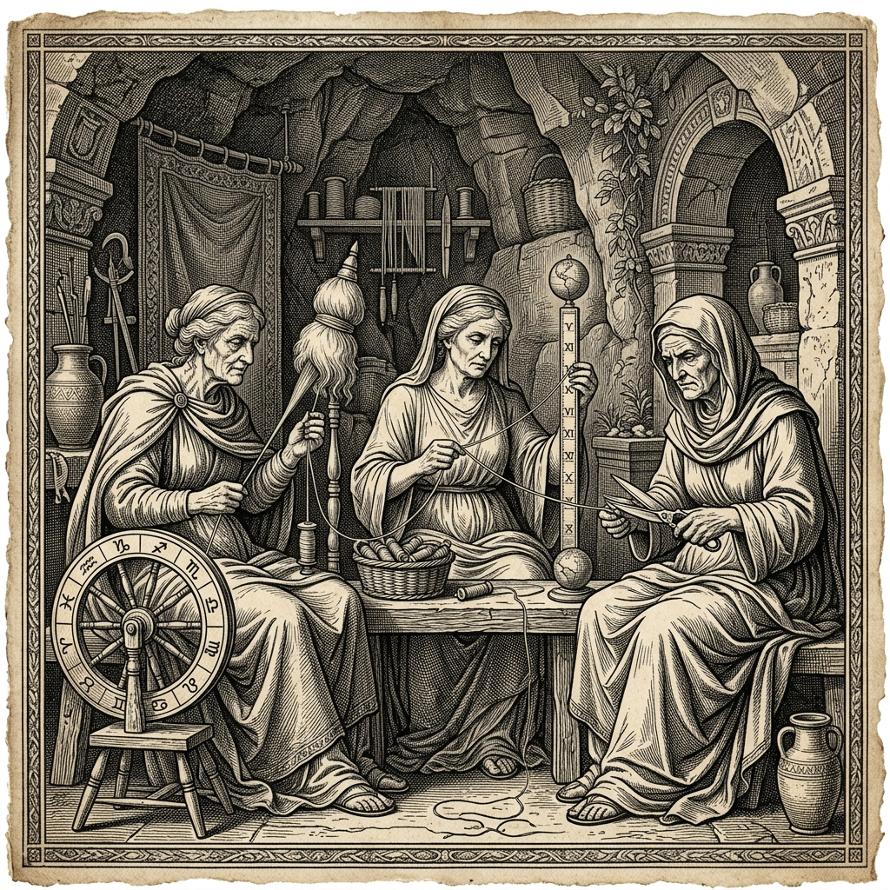

DIGITAL
SOCIETY
Moirai is a memory processing system designed to analyze and restructure the digital fabric of modern urban society. A contemporary exploration of data, city planning, and human traces.
THE FATES
In classical mythology, the Moirai (the Fates) controlled the metaphorical thread of life of every mortal from birth to death. Clotho spun the thread, Lachesis measured its length, and Atropos cut it. "The threads of life are woven long before they are cut."
This digital processing system adopts their namesake, operating on the contemporary urban traces of humanity. It weaves fragmented data into cohesive memory blocks, measures their societal impact, and determines their decay. They are the administrators of this experiment. They are clinical, efficient, and always watching. They see the town not as a home, but as a system to be preserved.
Learn more: Wikipedia Theoi Project
